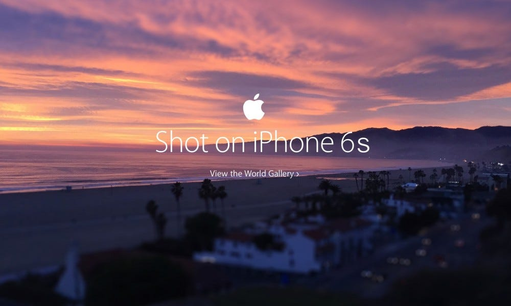

De la «produse bune la prețuri bune» la un mesaj care te face diferit de competiție — specific, verificabil, memorabil.
Antreprenorii mici nu câștigă prin bugete mai mari — ci prin mesaje mai bune. Și mesajul nu costă nimic.
Nu o promisiune vagă — o afirmație verificabilă pe care concurența nu o poate copia identic. E ceea ce te face diferit de competiție.
Clientul alege în 3 secunde. Care iese în evidență din prima privire? Cel cu un mesaj clar — restul se pierd în masă.
Cumpără ce poate face cu produsul tău — efectul în viața lui.

Shot on iPhoneAplică testul oricărui mesaj de marketing. Oprești când nu mai poți răspunde mai concret.
Trainer spune o frază. Tu răspunzi: deget jos = Feature (specificație) · deget sus = Outcome (rezultat pentru client).
USP = lucrul pe care tu îl faci mai bine, pe care clientul îl vrea, și pe care concurența nu-l oferă. De aici vine diferențierea.
Trei elemente obligatorii. Lipsește unul — nu mai e USP, e o promisiune vagă.
Acoperă numele afacerii tale. Dacă fraza merge și pentru alt brand — ai un slogan gol, nu un USP.
| ❌ Nu e USP (merge pentru oricine) | ✅ Este USP (doar al tău) |
|---|---|
| „Oferim produse de calitate" | „Singura cremă cu 5 ingrediente — toate pe etichetă" |
| „Servicii profesioniste la prețuri bune" | „Prânz livrat la birou în 30 min — sau nu plătești" |
| „Echipă cu experiență" | „Contabilitate cu răspuns în 24h — garantat prin contract" |
4 locuri unde să cauți — fiecare cu întrebarea care-l scoate la suprafață.
Modelul pe care îl urmăriți la exercițiu — CUI + CE + DE CE TU.
Înainte să-ți scrii USP-ul, mapezi competiția. Nu ca să-i copiezi — ca să găsești spațiul liber pe care îl poți ocupa tu.
6 întrebări despre fiecare competitor — răspunsurile arată unde ești diferit și unde e spațiu liber.
Din 100 de oameni care aud prima dată de tine — doar 3-5 ajung să cumpere. Mesajul tău trebuie să îi însoțească la fiecare etapă.
Același produs, 5 etape diferite — fiecare etapă cere un mesaj diferit.
Propuneți câte 5 produse/afaceri în fiecare coloană — dezbaterile când nu ești de acord cu o altă echipă sunt mai valoroase decât răspunsul corect.
Sus, lat — mulți care nu te cunosc. Jos, îngust — puțini, gata să cumpere. Mesajul se schimbă pe fiecare nivel.
Pattern simplu: Cold = problema lor · Warm = de ce tu · Hot = oferta concretă.
Mulți postează (te văd) și se miră că nu cumpără nimeni. Între ele e un drum de încredere — care se sare cel mai des.
Scop: să fii descoperit. NU vinzi încă. La TE VĂD faci umbră, nu vânzare.
E interesat, dar nu convins. Inima modulului — tot drumul se rupe dacă sari de la „te-a văzut" direct la „cumpără".
Aplici ce știi deja: pitch, preț, chemare, urgență. Tot greul (încrederea) l-ai făcut la TE CRED.
Treapta 1 = mostra (etapa TE CRED). Apoi prima comandă. Apoi clientul repetabil — cel mai valoros.
| ❌ Vânzare la întâmplare | ✅ Venit repetabil |
|---|---|
| 1 client FreshBox = 50 lei, o dată | 1 birou pe abonament = 50 lei × 20 zile/lună = 1.000 lei/lună |
| alergi mereu după clienți noi | clientul vine singur, lună de lună |
Pentru afacerea ta de caz din Foaia de drum — cine e și în ce stadiu se află.
Dacă aștepți ca un om să cumpere din prima postare, te dezamăgești. Pâlnia explică de ce ai nevoie de mulți sus.
Strategia ta diferă total în funcție de unde ești pe curbă — ce e geniu în Introducere poate fi greșit în Maturitate.
Design thinking, 5 pași. Pleci de la client, nu de la birou. Pasul cheie: Definești problema corect.
Nu a inventat produsul la birou — a urmat procesul pas cu pas.
Construiești minim → măsori reacția → înveți → ajustezi. Fiecare ciclu economisește luni și bani.
Același mesaj, 3 tonuri diferite — percepții complet diferite despre brand.
Care ton rezonează cu clientul tău specific? Depinde de avatar, nu de preferința personală.
Postare, reclamă, răspuns la comentariu — clientul recunoaște vocea înainte să vadă logo-ul. NaturaLab: peste tot informal + empatic.
Aceeași informație, 3 voci, 3 reacții diferite. Capcana frecventă: scriem pe Facebook ca într-un comunicat oficial. Și e greu de citit.
Apoi ține-o constantă. O voce dominantă + mici ajustări pe client — nu patru tonuri diferite de la o zi la alta.
| Avatarul tău | Vocea care prinde | De ce |
|---|---|---|
| 👦Tânăr / Gen Z | direct, scurt, cu umor | nu suportă corporatism; vrea să se simtă văzut și înțeles |
| 💼Profesionistul ocupat | concis, pe cifre, respect pentru timp | are 2 minute; vrea să vadă că-i rezolvi ceva real, rapid |
| 👪Părintele / familia | cald + sigur + responsabil | caută siguranță, nu oferte; vrea „omul ăsta are grijă" |
| 🏢Managerul / firma | eficacitate, ROI, soluție clară | vrea cifre și un pas următor — nu povești |
O structură simplă care funcționează oriunde: elevator pitch, postare, pagina About, prezentare.
Cârligul oprește atenția. Restul convinge. Fără cârlig, nimeni nu ajunge la USP-ul tău.
Pune-le pe ambele. 4 emoții care vând — fiecare cu cârligul ei:
Aplică formula CUI + CE + DE CE TU pe afacerea ta de caz din Foaia de drum.
Pe echipe, aplicați procesul în 4 pași — de la ce simte clientul la un mesaj diferit de toți.
Testezi USP-ul sub presiune înainte să-l folosești în lumea reală. Un USP care supraviețuiește obiecțiilor obligatorii e un USP solid.
3 minute per echipă. Feedback concret de la grup — ce funcționează și o îmbunătățire.
Cel mai folosit model din marketing. Nimeni nu sare direct sus. Fiecare treaptă cere altceva de la tine.
Ideal pentru mesaje scurte, postări directe, SMS. Pornești de la durerea lui — nu de la produsul tău.